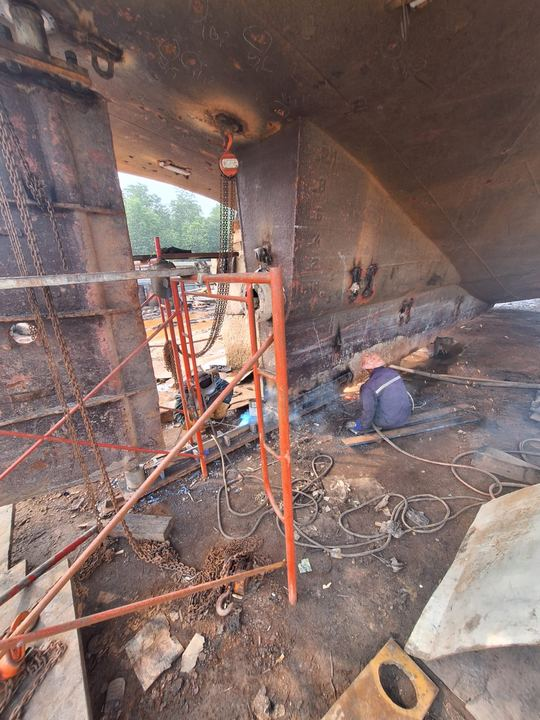
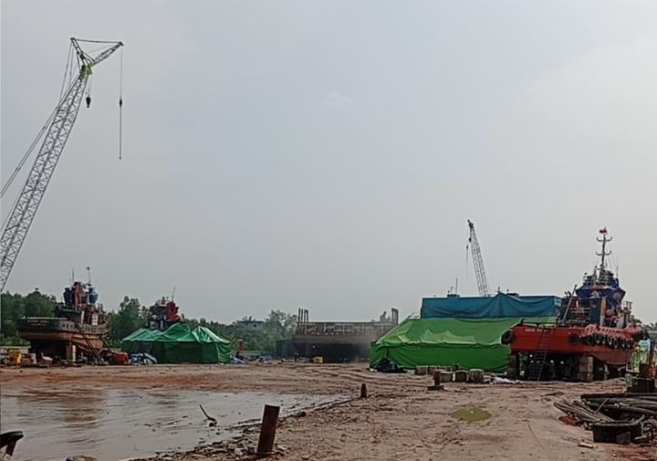
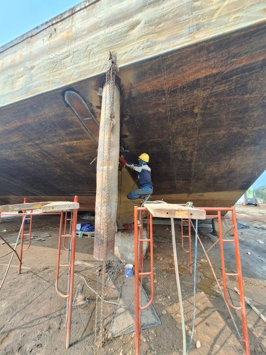
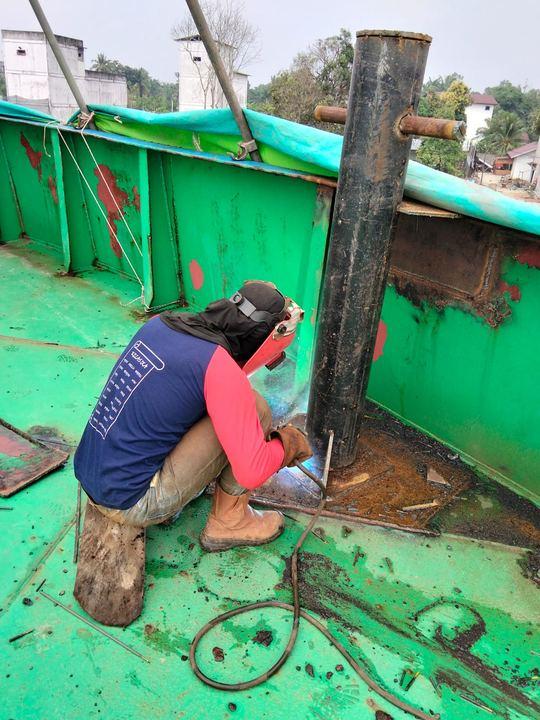
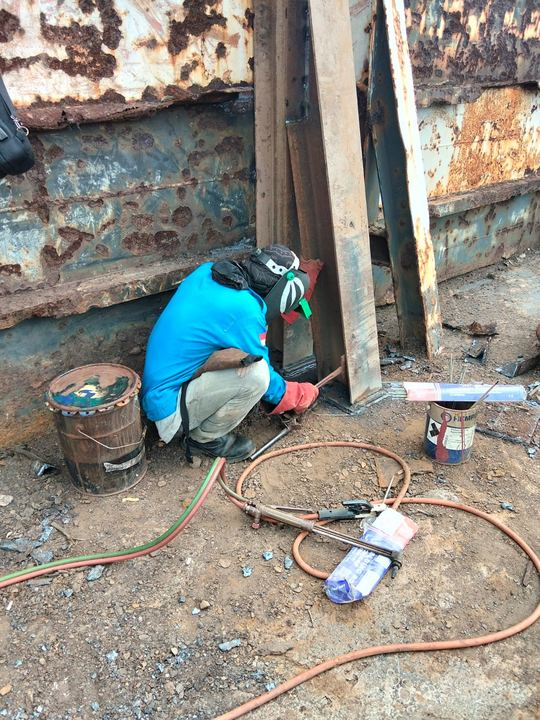
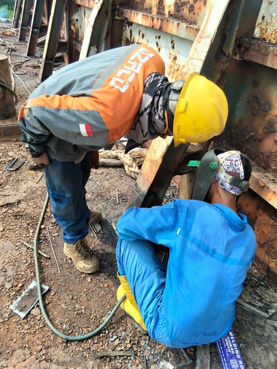
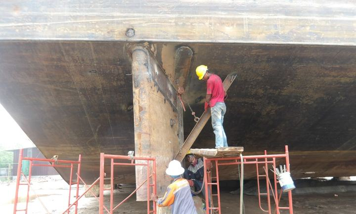
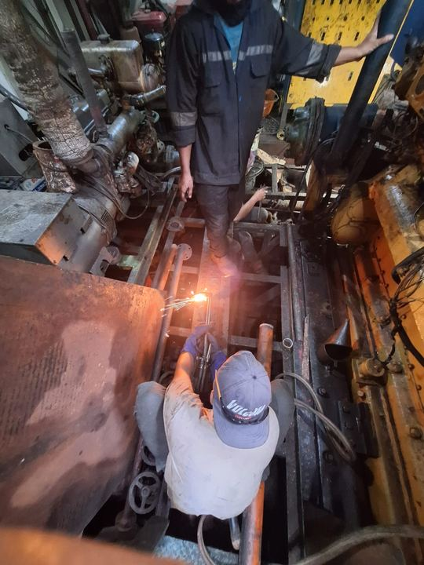
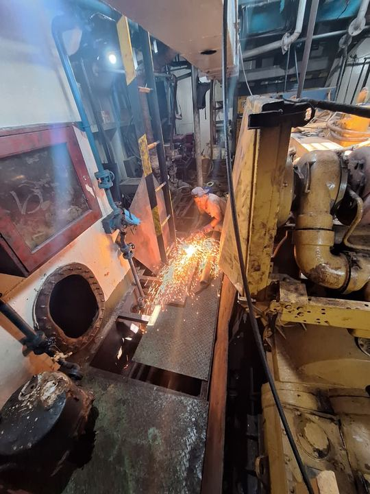
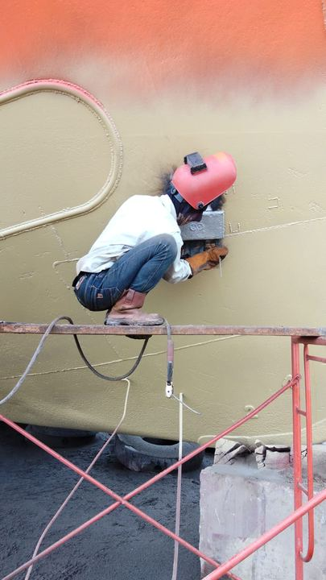

Pembangunan Kapal Baru
Kami membangun kapal sesuai spesifikasi pemesan, dari perencanaan dan fabrikasi lambung hingga kapal siap diluncurkan. Setiap tahap diawasi untuk memastikan kekuatan struktur, performa, dan efisiensi bahan bakar kapal.
PT. Cipta Piramida Mandiri
Galangan kapal di Kabupaten Bengkalis, Riau, yang melayani pembangunan kapal baru, reparasi dan perawatan kapal, serta fabrikasi baja.
Tentang Kami
PT. Cipta Piramida Mandiri adalah perusahaan nasional berstatus Penanaman Modal Dalam Negeri (PMDN) yang bergerak di bidang pembangunan, reparasi, dan perawatan kapal. Galangan kami berada di Desa Lubuk Muda, Kecamatan Siak Kecil, Kabupaten Bengkalis, dengan kantor di Pekanbaru.

Layanan
Kami membangun kapal sesuai spesifikasi pemesan, dari perencanaan dan fabrikasi lambung hingga kapal siap diluncurkan. Setiap tahap diawasi untuk memastikan kekuatan struktur, performa, dan efisiensi bahan bakar kapal.

Perbaikan lambung, perawatan berkala, dan docking kapal dengan waktu pengerjaan yang efisien. Pengawasan teknis yang ketat membantu kapal Anda lebih cepat kembali beroperasi dan memperpanjang usia pakainya.

Pengerjaan struktur baja dengan peralatan modern dan tingkat akurasi tinggi, mulai dari komponen kapal hingga struktur industri berskala besar.
Keunggulan
Pemeriksaan mutu (QC) dilakukan pada setiap tahap pengerjaan agar hasilnya sesuai spesifikasi teknis dan regulasi yang berlaku.
Hasil pekerjaan yang berkualitas dengan biaya yang bersaing.
Keputusan diambil dengan cepat, dan pengerjaan disesuaikan dengan kebutuhan setiap klien.
Menggunakan perangkat lunak desain terbaru dan metode konstruksi modular untuk mempersingkat waktu pengerjaan.
Visi
Menjadi episentrum inovasi maritim di Asia Tenggara, memperkuat kedaulatan maritim Indonesia, dan diakui secara global sebagai galangan kapal paling terpercaya yang menetapkan standar baru dalam kualitas, keselamatan, dan keberlanjutan.
Misi
The Gold Standard
Empat nilai yang kami pegang dalam setiap pekerjaan.
Transparan dan jujur dalam setiap kerja sama bisnis.
Pekerjaan ditangani oleh tenaga ahli yang kompeten dan bersertifikat.
Pemanfaatan sumber daya secara optimal untuk memberikan nilai lebih bagi klien.
Keselamatan kerja dan perlindungan lingkungan menjadi prioritas utama kami.
Fasilitas

Lahan terbuka yang luas untuk mobilisasi material, penyimpanan pelat baja, pipa, dan suku cadang, serta area fabrikasi dan perakitan komponen kapal.

Kolam landasan (graving dock/slipway) digunakan untuk menempatkan kapal dalam kondisi kering, sehingga lambung kapal di bawah garis air dapat diperiksa dan diperbaiki secara menyeluruh.

Dua unit crawler crane Zoomlion ZCC600V dengan kapasitas angkat masing-masing 60 ton, menjangkau seluruh area yard dan landasan.

Digunakan untuk menarik kapal naik ke landasan dan menurunkannya kembali ke air secara stabil dan terkendali.
| Merek / Seri | HY / OEM |
|---|---|
| Model | TWG WR40 |
| Tipe | Hydraulic Towing Winch |
| Kapasitas tarik | 30 Ton (300 kN) |
| Kapasitas tahan rem | ± 45 – 60 Ton |
| Diameter tali kawat | 40 mm |
| Kapasitas drum | ± 500 – 1.000 m |
| Kecepatan tarik | 0 – 10 m/min |
| Sistem penggerak | Motor hidrolik |
| Tekanan hidrolik | ± 16 – 20 MPa |
| Aliran oli | ± 120 – 160 L/min |
| Sistem kopling | Manual / Jaw Clutch |
| Sistem kontrol | Local Control Valve |
| Estimasi berat kosong | ± 3.500 – 4.500 kg |

Menyuplai udara bertekanan untuk peralatan pneumatik dan proses sandblasting, yaitu pembersihan karat dan cat lama pada lambung kapal.
| Merek | SHARK |
|---|---|
| Model | GLA 110-10 |
| Tipe | Rotary Screw Air Compressor |
| Daya motor | 110 kW / 150 HP |
| Tekanan kerja | 10 Bar (1,0 MPa / 145 PSI) |
| Kapasitas udara (FAD) | ± 16,8 m³/min |
| Tegangan listrik | 380 V / 3 Phase / 50 Hz |
| Metode starter | Star-Delta / Inverter (VSD) |
| Sistem pendingin | Pendingin udara |
| Sistem penggerak | Direct Drive |
| Tingkat kebisingan | ± 72 dB(A) |
| Suhu udara keluar | Suhu ruang + 15 °C |
| Estimasi berat | 2.550 kg |
| Dimensi (P × L × T) | 2.500 × 1.500 × 1.950 mm |
Galeri
Foto pekerjaan docking, reparasi, dan fabrikasi di galangan kami di Bengkalis.
 Tugboat dalam proses docking
Tugboat dalam proses docking
 Tongkang di atas airbag peluncuran
Tongkang di atas airbag peluncuran

Area galangan dan landasan
Perbaikan lambung tongkang Pengerjaan konstruksi tongkang
Pengerjaan konstruksi tongkang
 Crane dan alat berat di area galangan
Crane dan alat berat di area galangan
 Tugboat di atas landasan
Fabrikasi struktur lambung
Tugboat di atas landasan
Fabrikasi struktur lambung
 Pematangan lahan galangan
Pematangan lahan galangan
 Pemeriksaan kemudi dan propeller
Pemeriksaan kemudi dan propeller

Pengelasan di dek kapal Alur sungai di depan galangan
Alur sungai di depan galangan
 Perawatan propeller dan kemudi
Perawatan propeller dan kemudi

Pengelasan pelat baja Tugboat di area yard
Tugboat di area yard
 Pemeriksaan propeller
Pemeriksaan propeller

Pengelasan struktur kapal Tongkang di landasan
Tongkang di landasan

Reparasi lambung kapal
Pekerjaan di kamar mesin Alat berat di tepi dermaga
Alat berat di tepi dermaga
 Perawatan bagian bawah lambung
Perawatan bagian bawah lambung

Pekerjaan gerinda di kamar mesin
Persiapan pengecatan lambung Pemotongan baja
Pemotongan baja
 Inspeksi tangki kapal
Inspeksi tangki kapal
 Kapal di area landasan
Kapal di area landasan
Legalitas
Kontak
Untuk permintaan penawaran atau kunjungan ke galangan, silakan hubungi kantor kami di Pekanbaru atau datang langsung ke lokasi galangan.